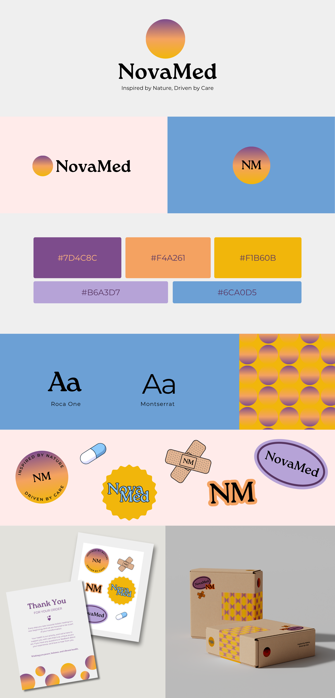
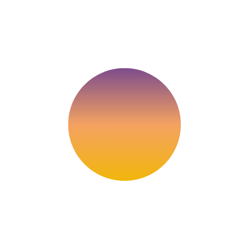
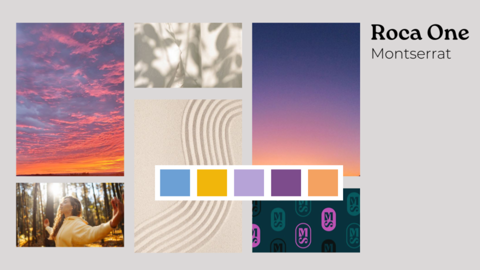
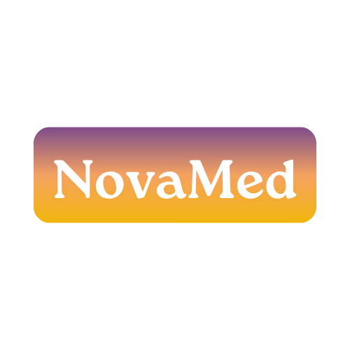
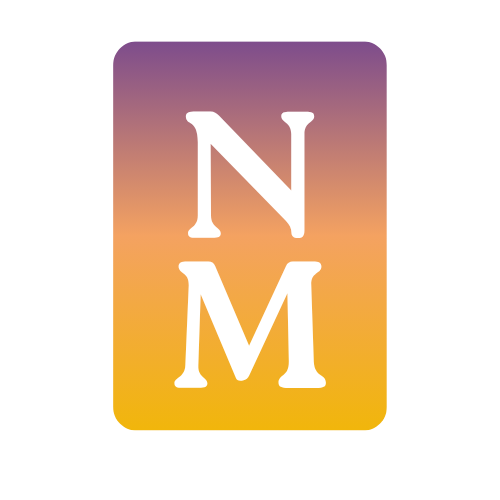
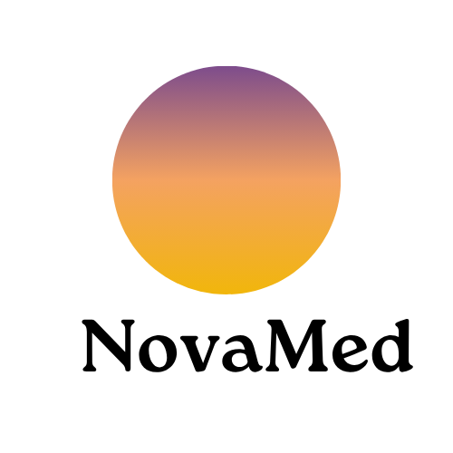
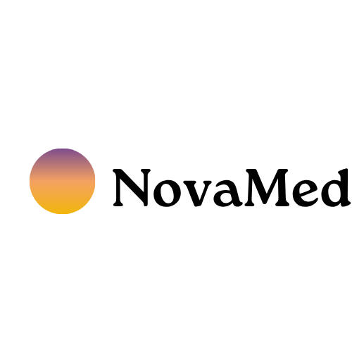

NovaMed Health: Building a Brand Identity from Concept to Packaging
A cross-media brand identity system for a fictional health e-commerce company — from logo design to physical packaging.

The project
A brand built to bridge nature and science.
NovaMed Health is a fictional e-commerce company specializing in natural health supplements. The goal of this project was to develop a cohesive brand identity and packaging system that delivers a unified brand experience across physical and digital media.
The brand concept centers on bridging the healing power of nature with scientific care. The visual identity reflects warmth, trust, and holistic wellness — qualities that needed to translate consistently from a logo to a shipping box.
"Inspired by Nature, Driven by Care."
— NovaMed Health brand tagline
Brand concept
Every element tells the same story.
The NovaMed visual identity is built around the Gradient Sun Icon — a symbol of balance and natural wellness. The yellow and orange flowing into purple mirrors the healing journey from active care to peaceful restoration. Every brand decision flows from this central metaphor.

Color Palette
Warm hues (#F4A261, #F1B60B) anchor the palette with energy and optimism. Purples (#7D4C8C, #B6A3D7) evoke healing and trust. Blue (#6CA0D5) serves as a calming complement.
Typography
Roca One for elegant, classic headlines that feel approachable and warm. Montserrat for modern, readable body text that keeps the brand feeling professional.
Visual Language
Organic shapes, gradient transitions, and nature-inspired imagery work together to signal holistic wellness without feeling clinical or cold.
Research and mood board
Grounding the brand in visual research.
I began with visual research, analyzing competitors in the wellness e-commerce space. The mood board I created emphasized warm tones, organic shapes, and approachable typography — balancing the clinical associations of health supplements with the warmth of natural wellness brands.

Adapting to feedback
Four directions. Two selected.
Feedback played a key role in refining the visual identity of NovaMed Health. I presented multiple logo options to peers and collected input on which designs best communicated the brand values of wellness, care, and professionalism. Based on that feedback I moved forward with the two strongest directions — both featuring the gradient sun symbol paired with the NovaMed wordmark.
Explored Directions


✓ Selected Directions


Cross-media solutions
One brand. Every surface.
The final brand system extends across four media formats, ensuring NovaMed Health feels cohesive whether a customer encounters it on a product label, an unboxing experience, or a marketing flyer.
A vibrant sticker page with themed elements — pills, bandages, and logo variations — for product packaging and promotional inserts.
3D Packaging
Product shipping boxes featuring patterned tape and branded visuals, ensuring a cohesive and memorable unboxing experience.
Product Labeling
Supplement bottle labels using consistent brand elements — gradient, typography, and icon — applied to physical product packaging.
Digital
A product flyer designed to support future digital or in-store marketing efforts, extending the brand into promotional contexts.
Reflection
What I learned.
This project taught me how to build and apply a flexible brand system across multiple media formats. Designing for print, packaging, and digital simultaneously pushed me to think about consistency in a way that single-medium projects never require.
The design critique process was especially valuable. Presenting logo options to peers and incorporating their feedback helped me evaluate design choices from an outside perspective — and pushed me to select the most effective solution rather than my personal favorite.
What worked
The gradient sun icon gave the entire brand system a clear visual anchor. Having one strong symbol that could scale from a tiny label to a large shipping box made every application decision easier.
What I would do differently
I would spend more time exploring color variations before committing — the warm-to-purple gradient is distinctive but I am curious how the brand would have felt with a more muted wellness palette.
What is next
I would love to extend NovaMed into a full digital experience — designing the e-commerce website UI to see how the brand identity translates into an interactive product.